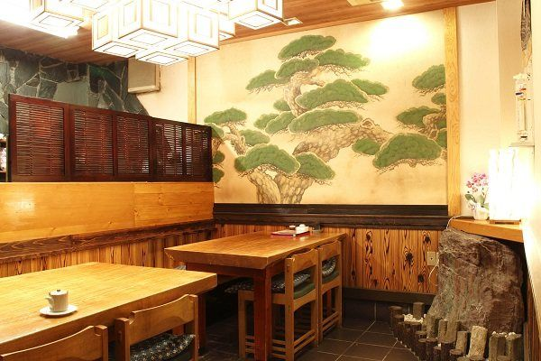
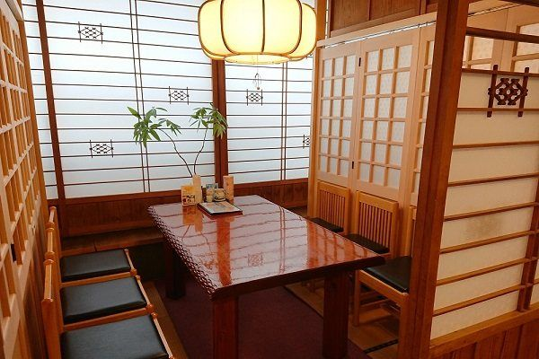
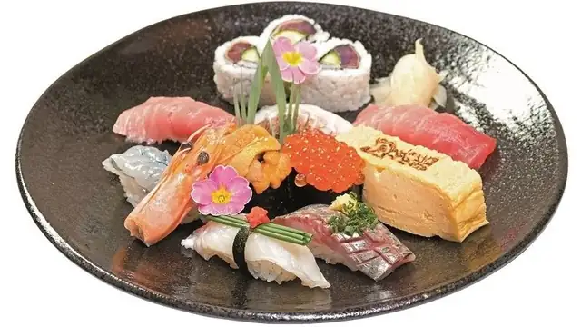
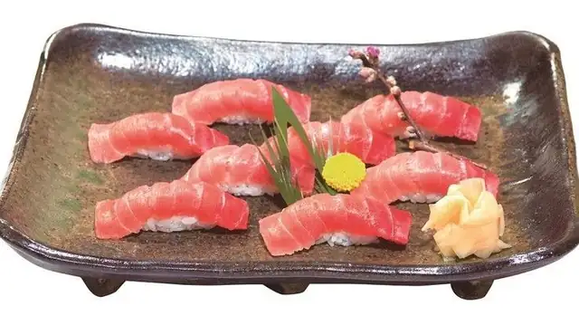
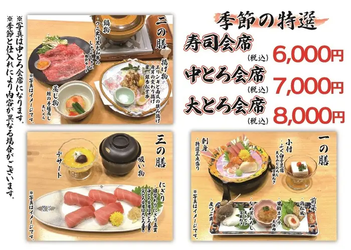
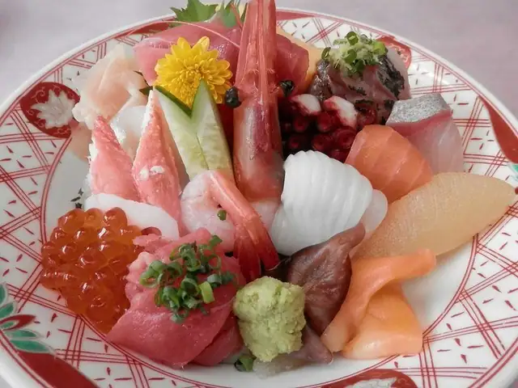
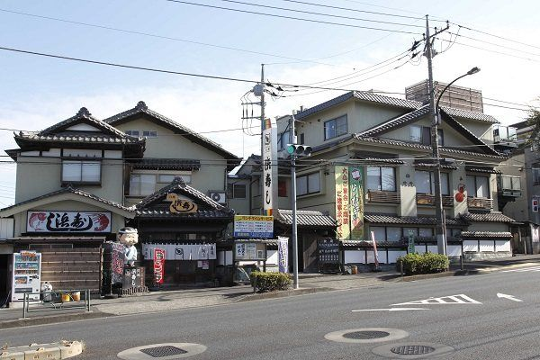
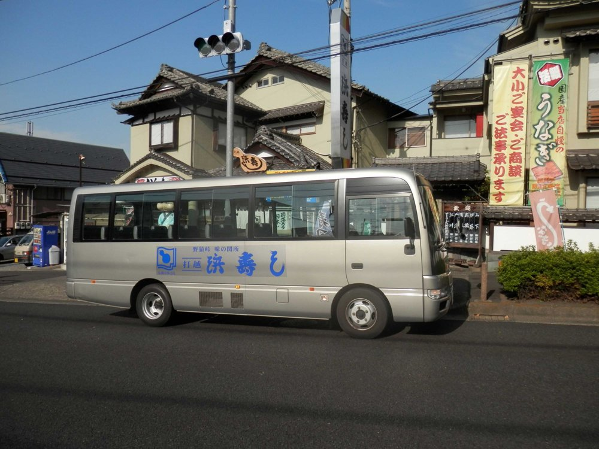
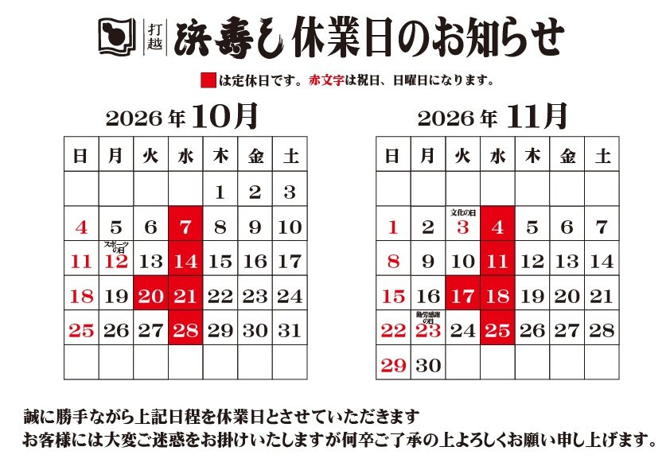

OUR STORY
Since 1972
Since 1972, we have served sushi and kaiseki (a multi-course Japanese meal) on Yaen Kaido road in Hachioji, western Tokyo. Our chefs prepare traditional Japanese dishes with seasonal seafood.


Since 1972 · Hachioji, Tokyo
浜寿し 打越店
Traditional Sushi & Kaiseki in Hachioji, Tokyo — since 1972
Watch our chefs make your nigiri at the counter, or relax in a private tatami room.
Not affiliated with the Hama-sushi conveyor-belt chain.
Option A: Walk-ins welcome — no reservation needed for sushi and à la carte. Reservations are required for kaiseki courses and groups of 10 or more.
Option B: Reservations recommended. Walk-ins are welcome when seats are available.
By phone: +81-42-635-6983 (Japanese).
WHAT TO EAT

にぎり寿司
from ¥2,000

中トロ寿司
¥4,500

寿司会席
¥6,000 / ¥7,000 / ¥8,000Reservation required
うな重
from ¥2,500

ちらし・海鮮丼
from ¥2,000
天然とらふぐ
Seasonal, when available
All prices include tax. Lunch sets (Mon–Sat 11:00–15:00, except public holidays) come with chawanmushi (savory egg custard) and salad.
GETTING HERE
From Mt. Takao
Take the Keio Line from Takaosanguchi Station toward Shinjuku and get off at Kitano Station (about 15 minutes). Kitano is on your way back to central Tokyo.
From Kitano Station
About a 15-minute walk. Or take a bus from Kitano Station North Exit bound for Minami-Osawa Station and get off at “Kinugaoka” — the restaurant is right at the stop.
By car
Free parking for about 30 cars.
Groups
Free shuttle bus for groups of 10 or more (reservation required).


Address
1-52-16 Kinugaoka, Hachioji, Tokyo 192-0912 / 192-0011
〒192-0912 / 192-0011 東京都八王子市絹ケ丘1-52-16 浜寿し打越店
HOURS

GOOD TO KNOW
OUR STORY
Since 1972, we have served sushi and kaiseki (a multi-course Japanese meal) on Yaen Kaido road in Hachioji, western Tokyo. Our chefs prepare traditional Japanese dishes with seasonal seafood.

